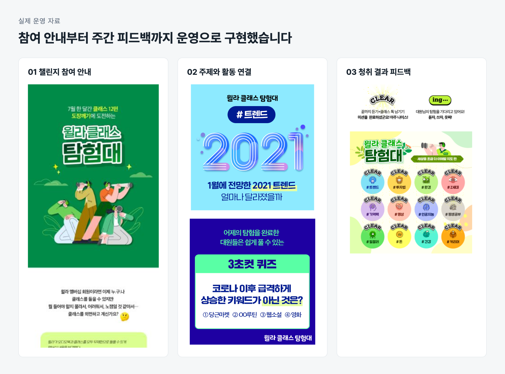
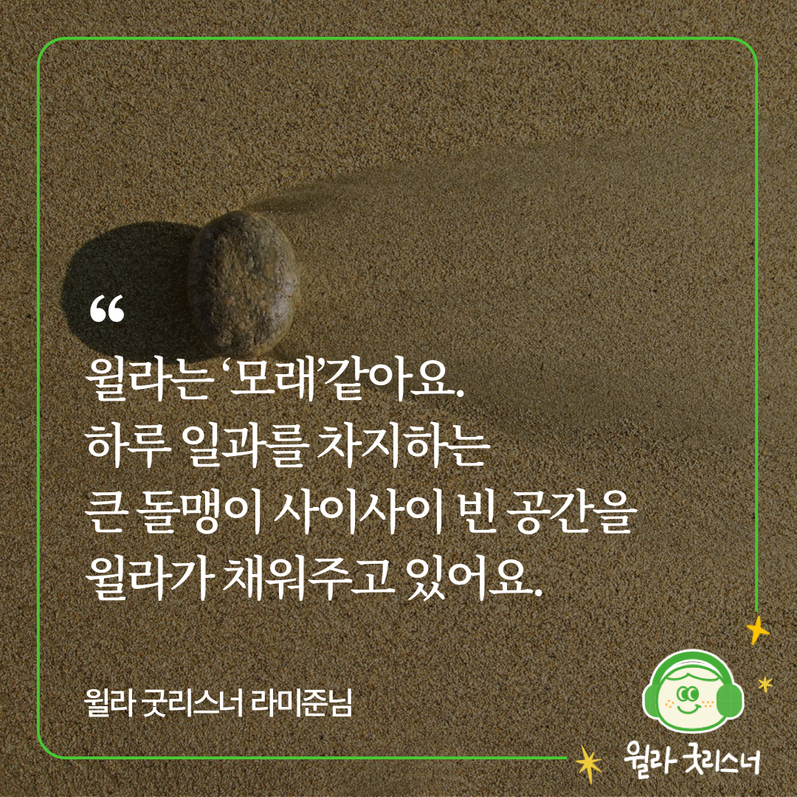
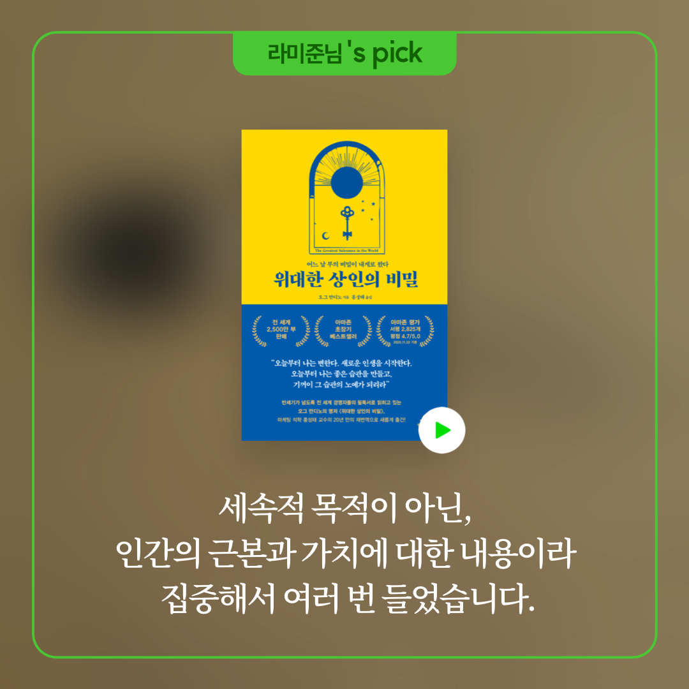

구독을 이어가는 고객은 무엇이 다를까?
윌라는 오디오북과 지식 강의인 클래스를 제공하는 구독 서비스입니다. 당시 과제는 구독 유지를 늘리는 것이었습니다. 하지만 고객의 어떤 행동을 바꿔야 구독이 이어질지 명확하지 않았습니다. 기능을 정하기에 앞서, 구독을 유지하는 고객의 이용 방식부터 이해해야 했습니다.
우리는 먼저 고객 행동을 분류하고 일관된 기준으로 기록하기 위한 택소노미를 설계했습니다. 이를 바탕으로 첫 달 무료 이용에서 유료로 전환하는 고객과 이후에도 구독을 유지하는 고객의 행동을 나눠 분석했습니다. 저는 팀 리드와 방향을 맞추며 분석에서 얻은 가설을 사용자 조사와 운영 실험, 후속 제품 기획으로 구체화했습니다.
첫 결제와 지속 구독에서는 서로 다른 행동이 보였습니다
첫 달 무료 이용에서 유료로 전환하는 고객에게서는 대작과 같은 시그니처 오디오북을 끝까지 듣는 경험이 눈에 띄었습니다. 반면 구독을 계속 유지하는 고객은 앱을 자주 실행하고 다양한 콘텐츠를 함께 듣는 패턴을 보였습니다. 첫 결제까지의 경험과 이후에도 계속 이용할 이유를 나눠 볼 필요가 있었습니다.
구독을 이어가지 않는 고객은 소설이나 자기계발서처럼 특정 카테고리에 이용이 집중된 경우가 많았습니다. 구독을 유지하는 고객은 오디오북뿐 아니라 클래스 이용도 높았습니다. 하나의 인기 작품을 다 듣는 것에서 나아가, 다른 주제와 형식으로 관심을 넓히는 경험에 주목했습니다.
마침 멤버십이 개편돼 오디오북과 클래스를 모두 이용할 수 있게 됐습니다. 클래스는 오디오북보다 형태와 주제가 다양하고 제작 기간도 짧아 시의성 있는 내용을 제공하기 좋았습니다. 익숙한 카테고리 밖에서도 들을 이유를 계속 만들 수 있는 콘텐츠였습니다.
여기서 가설을 세웠습니다. 고객이 앱을 더 자주 열고, 여러 카테고리의 콘텐츠를 이어 듣게 하면 구독을 지속할 이유도 늘릴 수 있을 것이라고 봤습니다. 실험에서 먼저 확인할 행동은 앱 실행 빈도와 청취량, 다양한 콘텐츠로의 청취 확장이었습니다.
함께 이용할 수 있는데, 클래스는 왜 듣지 않을까?
다양한 콘텐츠를 듣게 하려면 아직 클래스를 이용하지 않는 이유부터 알아야 했습니다. 클래스 미경험자를 조사하니 존재 자체를 모르는 경우와, 들어보려 해도 무엇부터 선택할지 모르는 경우가 있었습니다.
콘텐츠를 더 제공하는 것만으로는 이 장벽을 넘기 어려웠습니다. 처음 들을 만한 콘텐츠를 골라 추천 이유를 설명하고, 한 편을 들은 뒤 다음 선택까지 도와야 했습니다. 지식 콘텐츠를 꾸준히 듣는 데에는 자신의 성취를 확인하는 경험도 동기가 될 수 있다고 봤습니다. 추천과 진행 상황에 대한 피드백을 함께 제공해 보기로 했습니다.
배지와 등급을 만들기 전에, 행동이 달라지는지 봤습니다
배지와 레벨, 미션처럼 콘텐츠 서비스에서 흔히 사용하는 기능도 후보였습니다. 하지만 기능이 익숙하다는 이유만으로 윌라에서도 효과가 있을 것이라고 판단할 수는 없었습니다. 먼저 추천과 미션, 성취 피드백이 앱 실행과 다양한 청취로 이어지는지 확인하기로 했습니다.
이를 위해 제가 설계한 것은 별도 기능 개발 없이 전 과정을 운영으로 제공하는 4주 챌린지였습니다. 클래스 미경험자 중 참여를 희망하는 회원을 모집하고, 첫 주제를 ‘세상을 이해할 지도’로 정했습니다. 변화하는 세상을 이해하는 데 필요한 클래스를 매일 하나씩 골라 추천 이유와 함께 전달했습니다.
전달 수단은 카카오 친구톡이었습니다. 앱을 열지 않는 일상에서도 접할 수 있고, 이미지와 충분한 설명으로 들을 이유를 전할 수 있기 때문입니다. 콘텐츠 선정과 추천 문구 작성은 직접 맡았습니다.
다음 날에는 전날 콘텐츠를 다시 알리면서 비슷한 주제나 다른 관점의 콘텐츠를 이어 추천했습니다. 클래스와 오디오북을 넘나들며 미션에 포함된 콘텐츠를 듣는 데서 끝나지 않고, 자신의 관심에 따라 다음 콘텐츠를 고를 수 있도록 했습니다.
| 풀어야 할 문제 | 설계한 개입 |
|---|---|
| 클래스를 모르거나 첫 콘텐츠 선택이 어려움 | 하루 한 편과 추천 이유를 전달 |
| 청취를 이어갈 동기가 필요함 | 주간 목표와 청취 결과를 확인하는 성적표 |
| 추천받은 한 편에서 이용이 끝남 | 연관 주제와 다른 관점의 콘텐츠로 다음 선택 연결 |

한 주의 청취를 돌아보며 다음 미션을 이어가도록
DB의 청취 기록으로 미션 수행 여부를 확인했습니다. 콘텐츠 전체 분량의 80% 이상을 들었을 때 청취한 것으로 판정하고, 매주 일요일 한 주의 결과를 ‘가정방문’이라는 이름의 성적표로 전달했습니다.
참여자는 무엇을 얼마나 들었는지 돌아보고 다음 미션을 이어갈 수 있었습니다. 배지 시스템을 구현하지 않고도 자신의 진행 상황과 성취를 확인하는 경험을 제공한 것입니다. 운영 중에는 미션뿐 아니라 함께 추천한 연관 콘텐츠까지 듣는 참여자도 확인했습니다.
더 자주 앱을 열고, 추천받지 않은 콘텐츠까지 들었습니다
챌린지 기간에는 추천 콘텐츠에서 연관 콘텐츠로, 다시 스스로 선택한 콘텐츠로 청취가 확장됐습니다. 같은 기간 유사한 이용 행동을 보인 비참여 회원과 비교했을 때 참여자의 일평균 앱 실행 수는 2.8배, 재생 시간은 6배였습니다.
처음 확인하려던 것은 앱을 자주 실행하고 다양한 콘텐츠를 듣는 행동이었습니다. 한 번에 오래 듣는 데 그치지 않고 일상에서 윌라를 더 자주 찾았다는 점, 정해진 미션 밖에서도 들을 콘텐츠를 선택했다는 점에 주목했습니다.
참여자 의견에서도 이 변화를 이해할 수 있었습니다. 추천 이유가 있어 무엇을 들을지 고민하는 부담이 줄었고, 평소 고르지 않던 콘텐츠를 경험했으며, 목표를 달성하고 싶어졌다는 반응이 있었습니다. 이후에는 이런 추천을 챌린지 참여자에게만 제공하지 않고 앱 안에서 계속 만날 수 있도록 큐레이션을 개선했습니다.
청취 경험에서 관찰한 것과 다음 기획
| 확인한 내용 | 제품 판단에 반영한 방향 |
|---|---|
| 첫 유료 전환과 지속 구독에서 다른 청취 패턴 발견 | 앱 실행 빈도와 다양한 콘텐츠의 청취를 실험에서 확인할 행동으로 설정 |
| 클래스의 존재를 모르거나 첫 선택이 어려움 | 추천 이유를 설명하고 다음 콘텐츠를 연결 |
| 챌린지 참여자의 앱 실행과 청취 확대 | 주제별 큐레이션 지면과 운영 어드민에 추천 경험 반영 |
청취 경험 인터뷰와 2026.10.19 사용자 추가 설명을 바탕으로 정리했습니다.
일평균 앱 실행 수 2.8배와 재생 시간 6배는 챌린지 기간, 유사한 이용 행동을 보인 비참여 회원과 비교한 값입니다.
챌린지의 추천 방식을 앱 안에서도 이어갔습니다
먼저 클래스 미경험자에게 콘텐츠를 알리고 첫 청취를 안내하는 캠페인을 운영했습니다. 이어 큐레이션 지면을 개편해, 앱 안에서도 주제에 따라 묶인 콘텐츠를 발견할 수 있도록 했습니다. 주차별 메시지로 개별 콘텐츠를 추천하던 방식에서 주제와 선정 이유를 담은 컬렉션으로 확장했습니다.
저는 추천 지면과 운영 어드민의 요구사항을 기획했습니다. 고객에게는 왜 이 콘텐츠를 함께 들어볼 만한지 보이고, 운영자는 주제에 맞게 콘텐츠를 선정하고 전시할 수 있어야 했습니다. 직접 운영하며 확인한 추천 경험을 반복 제공할 수 있는 제품 기능으로 옮겼습니다.
CRM도 고객 상태에 따라 설계했습니다. 마케팅과 Braze 설정을 분담하고 일부 설정과 발송 후 메시지 수정에 직접 참여했습니다. 추천 지면과 메시지가 각각 다른 안내를 하기보다 고객의 첫 청취와 다음 선택을 함께 돕도록 했습니다.
많이 들은 사람만을 위한 리포트가 되지 않도록
연말에는 고객이 한 해의 청취 경험을 돌아보는 개인별 리포트를 기획해 앱에서 제공했습니다. 다음에 들을 콘텐츠를 추천하는 것과 함께, 그동안의 이용에서 자신만의 취향과 특징을 발견하게 하고 싶었습니다.
핵심은 어떤 데이터를 보여줄 것인가였습니다. 활발히 이용한 회원에게만 의미 있는 항목을 고르면 다른 회원은 비어 있는 결과를 받게 됩니다. 콘텐츠의 저자와 장르, 성우와 주제, 이용 시간대와 요일, 청취 시간 등을 살피며 이용량이 적은 회원도 의미 있는 결과를 받을 수 있는 항목을 골랐습니다.
리포트의 아이디어 제안부터 콘텐츠 기획과 설계를 맡았습니다. 단순히 많이 들었다는 기록을 넘어, 자신의 이용 방식을 돌아보고 윌라에서 새로운 청취 경험을 발견하도록 구성했습니다.
앱 밖에서도, 다시 듣고 싶어질 계기를 만들었습니다
인스타그램과 블로그에서는 청취를 유도하는 다양한 콘텐츠를 소개했습니다. 신작과 주제별 추천, 일상에서 윌라를 이용하는 장면을 통해 기존 회원과 이탈 회원, 잠재 회원이 듣고 싶은 콘텐츠를 발견하도록 했습니다.
자신의 SNS에 이용 경험을 공유한 회원은 ‘굿리스너’로 선정하고 좋아하는 콘텐츠를 추천할 기회를 제공했습니다. 서비스가 직접 고른 콘텐츠뿐 아니라 회원의 취향과 실제 이용 경험도 다른 사람의 청취를 이끄는 추천으로 활용했습니다.


구독이라는 결과를, 바꿀 수 있는 행동으로 나눴습니다
이 경험에서 얻은 가장 중요한 기준은 구독 유지라는 사업 목표를 곧바로 기능 목록으로 바꾸지 않는 것이었습니다. 행동을 분류하고 구독 단계별 이용 패턴을 살핀 뒤에야 첫 결제와 지속 이용에 필요한 경험을 나눠 볼 수 있었습니다. 인기 작품을 끝까지 듣는 경험과 새로운 콘텐츠를 계속 발견하는 경험은 서로 다른 접근이 필요했습니다.
또한 가설을 시험하기 위해 제품 기능을 먼저 완성할 필요는 없었습니다. 추천과 미션, 성취 피드백의 핵심 경험은 운영만으로 제공할 수 있었고, 그 과정에서 고객의 행동과 반응을 확인한 뒤 큐레이션 지면과 운영 기능으로 옮겼습니다. 기능의 유행보다 만들고자 하는 행동을 먼저 정의하고, 개발에 투자하기 전에 그 경험을 작게 구현하는 것이 제품 판단의 기준이 됐습니다.